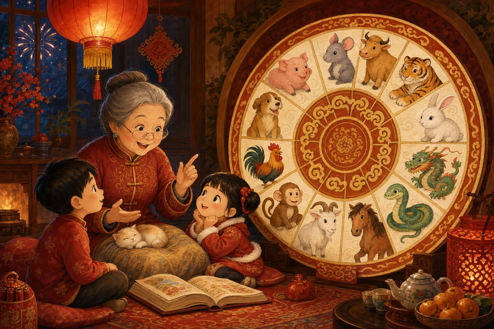
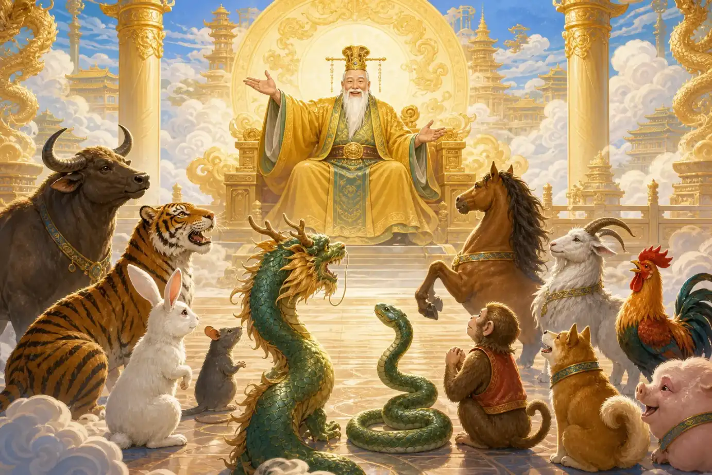
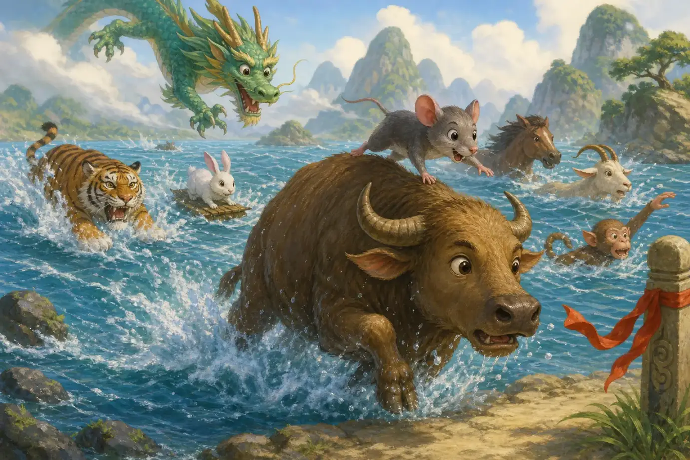
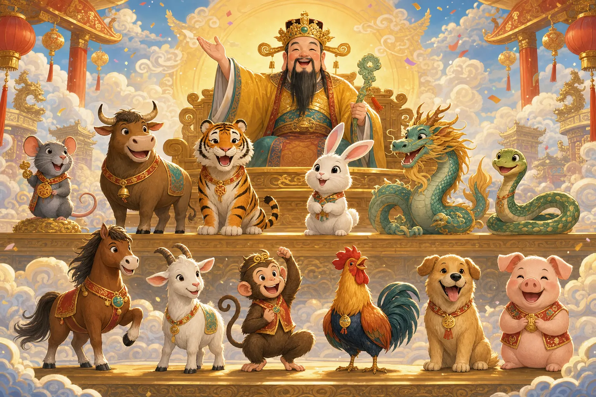

十二生肖
The Chinese Zodiac
Page 1
什么是十二生肖？
What Is the Chinese Zodiac?

When adults tell the zodiac story, they often talk about the twelve animals and the order they came in.
在中国，人们常常会说自己属什么。
有人属鼠，有人属牛，有人属虎。这里说的“属什么”，就是十二生肖。
十二生肖一共有十二种动物，每一年轮到一种，十二年转一圈。
In China, people often talk about which zodiac animal they are.
Some people are born in the Year of the Rat, some in the Year of the Ox, and some in the Year of the Tiger. This is called the Chinese zodiac.
There are twelve animals in all. Each year belongs to one animal, and the cycle starts over every twelve years.
Page 2
天上的比赛
The Race in the Sky

In the legend, the Jade Emperor invites the animals to a race. The first twelve to arrive become the zodiac animals.
中国有一个很有名的传说，专门解释十二生肖的顺序。
故事里，天上的玉皇大帝想选出十二种动物，来代表不同的年份。
于是他告诉动物们，要办一场比赛。先到终点的十二位，就能进入生肖名单。
China has a famous legend that explains the order of the zodiac animals.
In the story, the Jade Emperor, a ruler in heaven, wanted to choose twelve animals to stand for the years.
So he announced a race. The first twelve animals to reach the finish line would become the zodiac animals.
Page 3
聪明的老鼠和稳稳的牛
The Clever Rat and the Steady Ox

The rat was small, so it rode on the ox's back across the river and jumped to shore at the very end.
比赛开始以后，牛一步一步稳稳地往前走。它力气大，也很会过河。
老鼠知道自己个子小，就悄悄爬到牛背上，请牛带它一起过河。
快到终点的时候，老鼠一下子跳到岸上，得了第一名，牛得了第二名。
When the race began, the ox moved forward one steady step at a time. It was strong and good at crossing the river.
The rat knew it was small, so it quietly climbed onto the ox's back and let the ox carry it across.
Right before the finish line, the rat jumped onto the shore first. That is how the rat came in first and the ox came in second.
Page 4
其他动物怎么到的？
How Did the Others Arrive?
老虎很勇敢，所以得了第三名。兔子很机灵，想办法过了河，得了第四名。
龙本来飞得很快，可是它在路上停下来帮助别人，所以得了第五名。蛇跟在马后面，最后拿到了第六名，马是第七名。
羊、猴、鸡一起合作，分别得了第八、第九和第十名。狗本来会游泳，可是它玩了一会儿水，只得了第十一名。猪跑得最慢，最后得了第十二名。
The tiger was brave, so it came in third. The rabbit was clever and found a way across the river, so it came in fourth.
The dragon could fly fast, but it stopped to help others on the way, so it came in fifth. The snake followed behind the horse and took sixth place, while the horse came in seventh.
The goat, monkey, and rooster worked together and came in eighth, ninth, and tenth. The dog could swim well, but it stopped to play in the water and came in eleventh. The pig moved the slowest and came in twelfth.
Page 5
生肖的顺序排好了
The Zodiac Order Is Set

When the race was over, the twelve animals kept the order in which they arrived and became today's zodiac animals.
比赛结束以后，十二生肖的顺序就排好了。
顺序是：鼠、牛、虎、兔、龙、蛇、马、羊、猴、鸡、狗、猪。
从那以后，人们就用这十二种动物来代表不同的年份。
When the race was over, the order of the zodiac was set.
The order is: rat, ox, tiger, rabbit, dragon, snake, horse, goat, monkey, rooster, dog, and pig.
From then on, people used these twelve animals to represent different years.
一个聪明又热闹的故事
A Clever Story to Remember
所以，十二生肖不只是十二种动物的名字。
它也是一个关于比赛、聪明、勇敢和合作的中国故事。
So the Chinese zodiac is not only the names of twelve animals.
It is also a Chinese story about racing, clever thinking, courage, and working together.